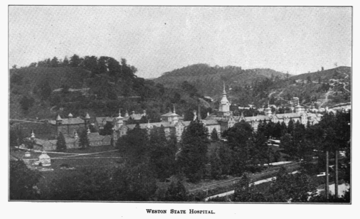
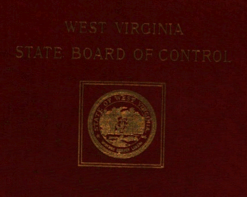

The Place: Weston State Hospital
{kind=link}
I chose the Weston State Hospital (also known as the Trans-Allegheny Lunatic Asylum) after driving past a sign on I-79 that advertized tours of the abandoned institution. The idea of the asylum as tourist attraction fascinated me and researching online I learned that it was indeed a major tourist attract and that it had been featured on the Travel Channel program Ghost Hunters.
The Source: 1919 Government Report
I searched HathiTrust Digital Library for Weston State Hospital and found this Biennial Report from the West Virginia State Board of Control from 1919. This document provides an overview of state institutions including asylums, hospitals orphanages as well the university, trade schools, and teachers' colleges.
Digging Deeper: Labor and Amusements
{kind=link}
I search the document for mentions of the Weston State Hospital and I eventually came to this section - a statement written by Weston's superintendent - on work and amusements that I think sheds light on the life of the inmates at the asylum. The superintendent obviously believes in the importance of leisure activities for the inmates, while also feeling the need to justify spending on these activities to the board. He also takes pains to assure the board that the institution is using the labor of the inmates and even that it might one day be profitable. Considering these together it is clear that institution officials felt vulnerable to accusations that they were wasting money while at the same time seemed to be pressured by their inmates to provide more leisure activities.